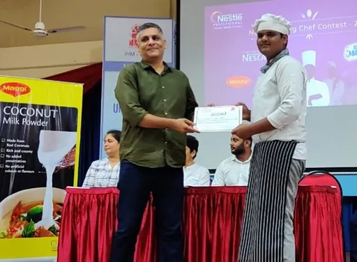

Charades · Actions & Jobs · page 2/11 · all packs
Reject an image by adding its slug to public/charades/charades-actions/reject.txt (append ! to keep it word-only), then re-run node scripts/genimages.mjs.
1 2 3 4 5 6 7 8 9 10 11 word only
Bowling bowlingword only
Boxing boxingword only
Bricklaying bricklayingword only
Brushing a dog brushing-a-dogword only
Builder builderword only
Bungee jumping bungee-jumpingword only
Butcher butcherword only
Canoeing canoeingword only
Carpenter carpenterword only
Carpentry carpentryword only
Carrying groceries carrying-groceriesword only
Cartographer cartographerword only
Cashier cashier
Chef chefCC0 · Suyash Jagtap official · source word only
Cleaning windows cleaning-windowsword only
Climbing climbingword only
Conductor conductorword only
Cowboy cowboyword only
Cricket cricketword only
Croquet croquet1 2 3 4 5 6 7 8 9 10 11